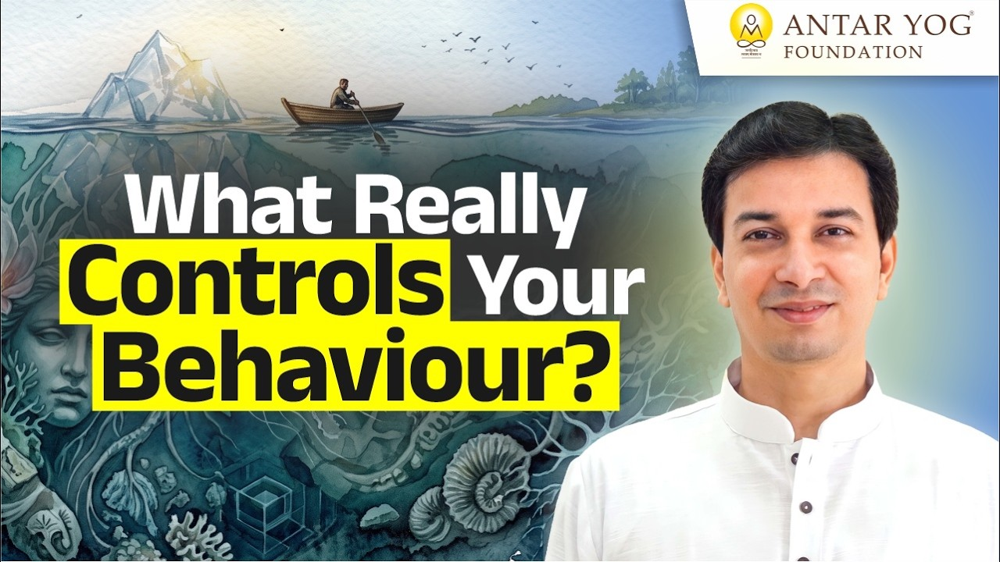

क्या सचमुच मैं ही कर्ता हूँ?
हम सब मानकर चलते हैं कि जो कुछ हम करते हैं, वह हमारा अपना निर्णय है। पर क्या सच में ऐसा है?
त्रिगुण और कर्म का संबंध यह है: हर मनुष्य में किसी क्षण सत्व, रज या तम में से एक गुण प्रबल होता है, हर स्थान और वस्तु का भी अपना गुण होता है, और दोनों के मेल से कर्म होता है। भगवद्गीता (३.२७) कहती है कि सारे कर्म प्रकृति के गुणों द्वारा होते हैं, पर अहंकार से मोहित मनुष्य स्वयं को कर्ता मानता है।
यह सारा संसार तीन गुणों (qualities of nature) में बँटा हुआ है: सत्व (शुद्धता और शांति), रज (गति और भोग की चाह) और तम (जड़ता और अंधकार)। स्थान, व्यक्ति, वस्तु, सब कुछ इन्हीं के अनुसार विभाजित है।
आचार्य जी कहते हैं कि सब कुछ सत्व, रज और तम के हिसाब से बँटा हुआ है, फिर भी हम अहंकार में यही समझते रहते हैं कि मैं कर्म करता हूँ।
कर्म कौन करवाता है?
हर मनुष्य में किसी भी क्षण कोई न कोई गुण प्रबल होता है। हर स्थान का भी अपना एक गुण होता है। और आसपास की वस्तुएँ, जो हाथ में हैं, जो सामने सजी हैं, जो संसार में दिख रही हैं, उनका भी।
इन सबके मेल से ही कर्म होता है। भगवद्गीता यही कहती है:
प्रकृतेः क्रियमाणानि गुणैः कर्माणि सर्वशः।
अहङ्कारविमूढात्मा कर्ताहमिति मन्यते॥
"सारे कर्म प्रकृति के गुणों द्वारा होते हैं, पर जिसका अंतःकरण (inner instrument: मन, बुद्धि, चित्त, अहंकार) अहंकार से मोहित है, वह मानता है कि 'मैं कर्ता हूँ।'"
(श्रीमद्भगवद्गीता ३.२७)
अभी इस क्षण आपके भीतर कौन सा गुण प्रबल है?
गोवा का समुद्र तट: एक राजसिक मंच
गोवा के समुद्र तट का वातावरण (समुद्र नहीं, तट का माहौल) राजसिक है। अब वहाँ एक राजसिक व्यक्ति पहुँचे।
ऑफिस में वह सूट-बूट वाला बड़ा अधिकारी हो सकता है। पर यहाँ? तुरंत फूलों वाली चमकीली रेशमी कमीज़, चटक हरी या पीली चड्डी, और बहुरंगी धूप का चश्मा।
उसके मन में यह विचार क्यों आया? वह सूट-बूट पहनकर समुद्र में क्यों नहीं गया?
आचार्य जी पूछते हैं कि क्या सचमुच उसने वह कर्म किया, या प्रकृति ने उससे करवाया?
भीतर और बाहर का संयोग
यह केवल बाहर की प्रकृति का काम नहीं था। उसके भीतर का गुण और बाहर का गुण, दोनों मिले, और कर्म हो गया।
पर कोई संत महात्मा, भगवा वस्त्रधारी, जो कैवल्य (परम मुक्ति की अवस्था) तक पहुँच चुका है, वहाँ जाए तो? उसे कोई फर्क ही नहीं पड़ेगा। यह भी एक कर्म है, और यह भी पहले से तय है।
मदिरालय: तमस का द्वार
मदिरा का अड्डा तामसिक स्थान है। वहाँ कोई सात्विक व्यक्ति पहुँचे तो वह नाक पर कपड़ा रखकर निकल जाएगा।
और तामसी व्यक्ति? पशु की तरह जीभ निकाले भागा चला जाएगा कि कुछ खाने-पीने को मिल जाए।
यहाँ एक निश्चित मेल है, एक निश्चित सूत्र। जैसा मेल, वैसा व्यवहार।
आपके हाथ में क्या है?
समाज आपके हाथ में नहीं है। प्रकृति बाहर भी है और भीतर भी। बाहर की प्रकृति आप नहीं बदल सकते, पर भीतर की?
जब ये मेल समझ में आने लगें, तो अपने गुण बदलना आपका कर्तव्य बन जाता है। अगर नहीं बदले, तो आसपास का वातावरण आपसे कर्म करवाता रहेगा, और आप अहंकार में यही मानते रहेंगे कि "मैं कर रहा हूँ।"
आचार्य जी बताते हैं कि जिसकी मृत्यु यह मानते हुए होती है कि मैं कर्म करता हूँ, वही पितर बन जाता है।
पितर बनने का अर्थ क्या है, यह आगे की चर्चा का विषय है।
आपके कितने निर्णय सच में आपके हैं, और कितने आपके गुणों और वातावरण के मेल से बने हैं?
मुख्य बातें
- संसार में स्थान, व्यक्ति और वस्तु सब सत्व, रज और तम में बँटे हैं।
- भीतर के गुण और बाहर के गुण का मेल ही कर्म बनाता है (गीता ३.२७)।
- राजसिक व्यक्ति राजसिक स्थान पर, तामसिक व्यक्ति तामसिक स्थान पर, एक निश्चित सूत्र के अनुसार व्यवहार करता है।
- कैवल्य पर पहुँचे संत पर वातावरण का असर नहीं पड़ता।
- बाहर की प्रकृति आपके हाथ में नहीं, अपने गुण बदलना आपका कर्तव्य है।
- "मैं कर्ता हूँ" इस अहंकार के साथ मृत्यु होने पर मनुष्य पितर बनता है।

आगे पढ़ें

क्या आपकी सफलता सिर्फ आपके प्रयत्न का फल है? क्या घर, परिवार और काम सच में आपके बिना रुक जाएंगे? इस प्रवचन में भगवद्गीता के एक छोटे से श्लोक के सहारे…

हम सबने सुना है कि प्रकृति के तीन गुण हैं: सत्व, रज और तम। पर क्या आपने कभी रुककर सोचा है कि "गुण" शब्द का अर्थ वास्तव में क्या है?

क्या आपने कभी सोचा है कि साधना से मिली शांति कुछ ही दिनों में क्यों फीकी पड़ जाती है? आचार्य जी इसका उत्तर बहुत सरलता से देते हैं: यह संगति का प्रभाव…